path connected universal cover as galois cover
1. Proposition
Let  be a universal cover at
be a universal cover at  , where
, where  is path connected covering and
is path connected covering and  is connected.
is connected.
Then  is a galois cover
is a galois cover
2. Proof
2.1. galois at 
Let
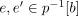
. Then this follows from the universal property of a universal cover, as there exist maps of covering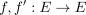
with
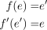
Furthermore, by the uniqueness of map of covering, which fixes  resp.
resp.
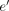
(namely the identity morphism) it follows, that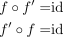
2.2. galois at arbitrary
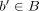
By connected codomain and surjective covering map it follows that is surjective.
Hence for choose a fibre
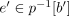
(as well as a fibre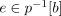
Moreover choose a path
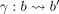
by path inducing natural isomorphism between fundamental groups, we get group-isomorphism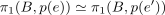
Furthermore, naturality ensures that
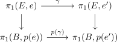
Thus by Normalteiler unter Isomorphismen it follows that
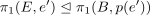